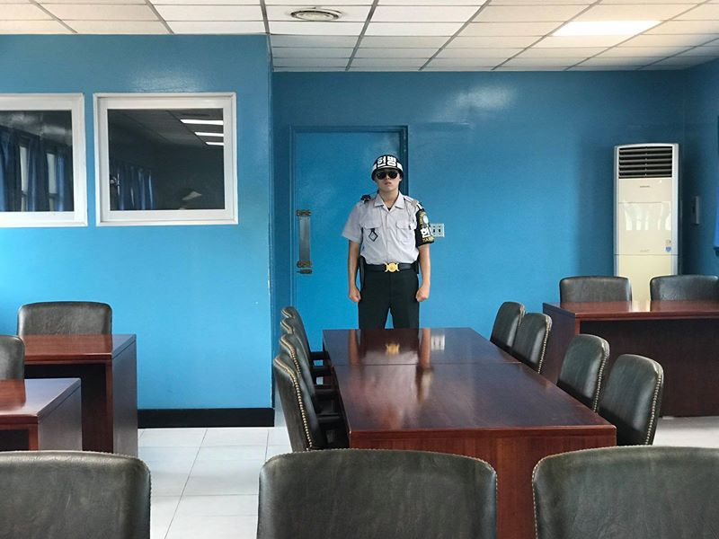

Jižní Korea - na skok (krok) do KLDR léto 2018
Včera jsem měl možnost navštívit demilitarizovanou zónu, nejstřeženější místo na světě, na chvíli překročit hranice do Severní Koreje a strávit celý den se severokorejským uprchlíkem.
Joint Security Area, Pchanmundžom, je jediné místo v demilitarizované zóně (DMZ), kde proti sobě stojí vojáci Severní a Jižní Koreje tváří v tvář. Ty dva modré baráky stojí přesně na hranici, polovina je v Severní a druhá Jižní Koreji, šedý dům naproti je už v KLDR. Tohle byla ale moje poslední zastávka v DMZ, takže postupně.
“To bude zase vedro,” byla první slova, která jsem slyšel, když jsem potkal osazenstvo zájezdu. Do demilitarizované zóny, čtyřkilometrového pásu podél hranic, se nedá jet samostatně, ale pouze v organizovaném zájezdu. A zhruba 80% autobusu tvořili Češi z poznávacího zájezdu s cestovkou a pak další skupina volně pobíhajících Čechů.
Nejzajímavější člen zájezdu byla však této paní, která před pár lety utekla ze Severní Koreje a po celý den s námi byla a odpovídala na dotazy. Její tvář se nesměla fotit, protože její mladší bratr je stále v KLDR, zbytek rodiny zemřel hlady před několika lety (V KLDR byly rozsáhlé hladomory, při kterých zahynulo 10% obyvatel). Převaděč jí zadarmo převedl přes řeku a prodal Číňanům. Tam pak musela 3 roky pracovat, než získala peníze a mohla se vyplatit. Poté utíkala stejnou cestou, jakou jsem popisoval [zde](http://www.svetpatritemcoseneposerou.cz/blog-jak-se-utika-ze-severni-koreje.html). Peníze získané tímto průvodcováním pak posílá přes čínské překupníky bratrovi.
Byla zajímavá, nikdy se na mě nepodívala, přestože jsem s ní celou cestu seděl. Pouze odpovídala na dotazy, které jí přeložila průvodkyně. Jinak ty šaty, které nosila, si sama vyrobila.
Vyhlídka z observatoře Dorasan. Odtud můžete nahlédnout do KLDR. Nejprve je zde pásmo demilitarizované zóny a za ním město Kaesong.
Ještě blíže je pak propagandistická vesnice s moderními domy, kde ale nikdo nebydlí. Tohle je můj pokus vyfotit si ji přes dalekohled.
Další zastávkou byl 3. tunel agrese. Ten vyhloubili Severokorejci, aby v tichosti zaútočili na svého jižního souseda. Všichni, kteří tento tunel stavěli, byli poté popraveni. Zatím byly objeveny 4 tunely, ale jejich patrně mnohem víc.
Do tunelu se vyjíždí tímto vlakem a nesmí se v něm fotit. Já jsem měl štěstí a vagón jsem sdílel s Čechy, kteří během jediné cesty nahoru dokázali stvořit teorii o tom, že tunel vytvořili Američané s Jihokorejci kvůli turistům. Mohl jsem tak na vlastní oči vidět, jak vzniká konspirační teorie a jak se šíří dál účastníky zájezdu. Poučné!
Freedom bridge a přání o sjednocení Severní a Jižní Koreje. Stále je ještě 60 000 rozdělených rodin, kde část žije na severu a část na jihu.
Poslední lokomotiva, která přijela hranici, než začala válka.
Vojanda.
Demilitarizovaná zóna s jednou z mnoha hlídek.

Vstup do zvláštní oblasti JSA. Po dvou pasových kontrola musíte podepsat dokument, že berete na vědomí, že vás mohou zabít. Nesmíte nic fotit vyjma dvou míst a nesmíte mít díry v kalhotách, protože si vás pak Severokorejci vyfotí a použijí tyto fotky v propagandistických materiálech o tom, jak jsou lide jinde chudí.
Joint Security Area, Pchanmundžom. Tady se odehrávají jednání mezi Severní a Jižní Koreou. Obě země jsou formálně stále ve válce.
Do jednoho z těchto domů můžete vstoupit a jakmile obejdete stůl uprostřed, dostanete se na území KLDR. Voják vzadu hlídá dveře, pokud byste jimi prošli, tak vás prý Severokorejci ihned zastřelí.
S těmi zaťatými pěstmi a černými brýlemi vypadají dost ostře!

Musí tam stát nehnutě ve 40°, nemohu si utřít ani stékající pot. Dříve zde byly i Severokorejci, ale poté, co před pár měsíci jeden zběhl, jsou v místnosti jen ti z jihu.